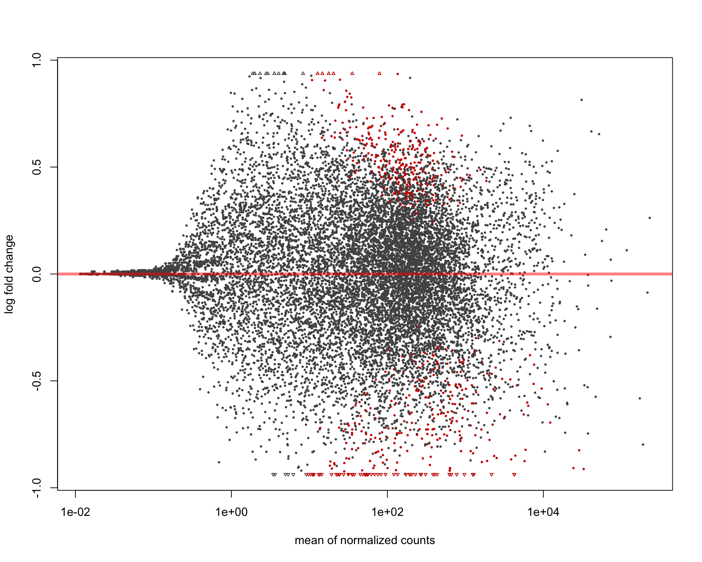
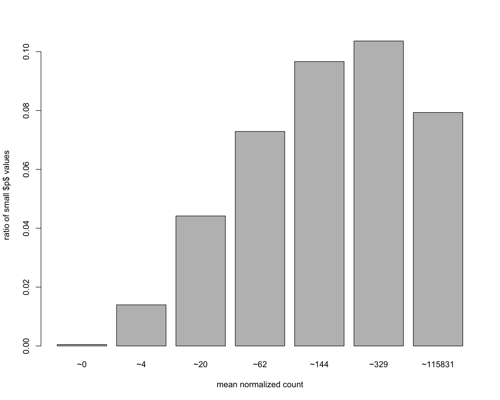
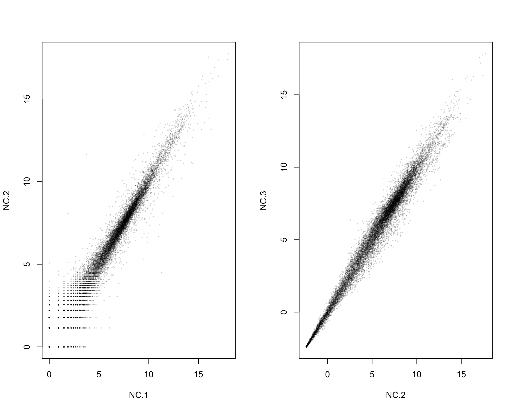
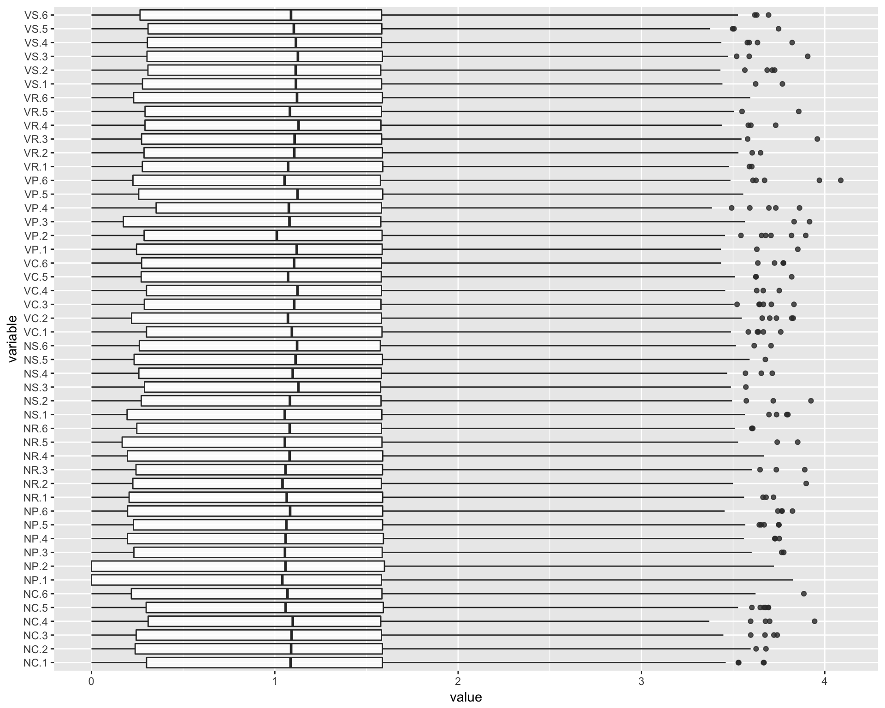
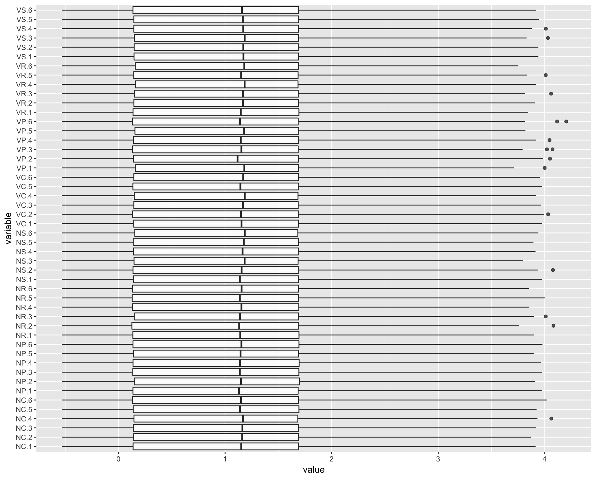
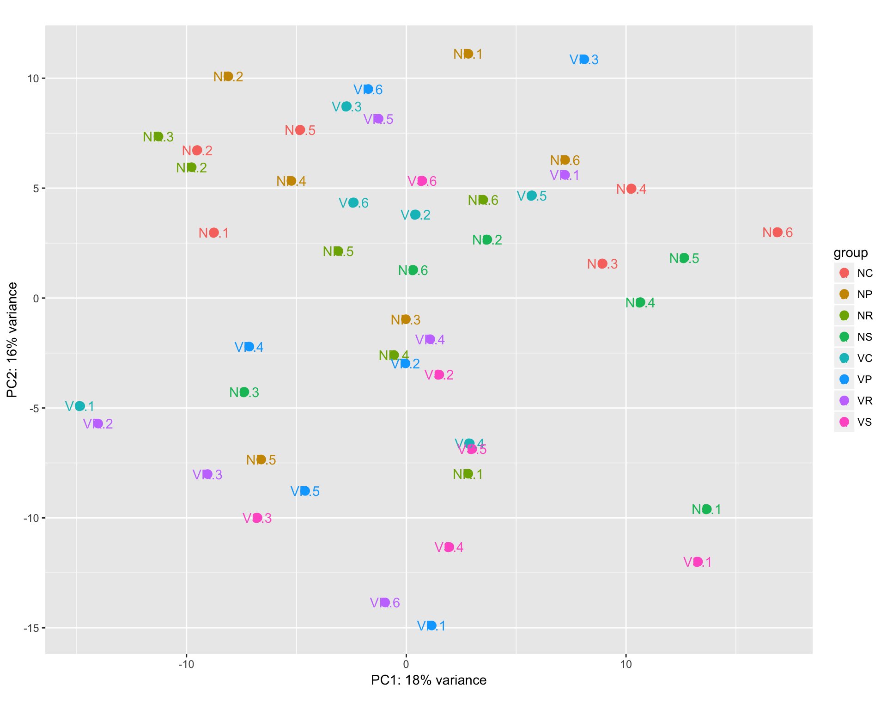

library(DESeq2)
thisPath <- "/Users/lindz/BeeVirusDiet/DESeq"
beeCounts <-read.delim(file="../AllLaneCount.txt",row.names=1,stringsAsFactors = FALSE)
colnames(beeCounts) <- c("NC.1", "NC.2", "NR.1", "VR.1", "NS.1", "VP.1", "NS.2", "VR.2", "NP.1", "VP.2", "VC.1", "NP.2", "VP.3", "NP.3", "VS.1", "VS.2", "VC.2", "NC.3", "VP.4", "NC.4", "NR.2", "VC.3", "VC.4", "NP.4", "VR.3", "NC.5", "VS.3", "NP.5", "VC.5", "VS.4", "NS.3", "VS.5", "VP.5", "NR.3", "NR.4", "VC.6", "NS.4", "NC.6", "NP.6", "VR.4", "NR.5", "NR.6", "NS.5", "VP.6", "NS.6", "VR.5", "VR.6", "VS.6")
countdata <- beeCounts[ , order(names(beeCounts))]
countdata <- as.matrix(countdata)
coldata = data.frame(row.names = colnames(countdata), virus = unlist(lapply(colnames(countdata), function (x) substring(unlist(strsplit(x, "[.]"))[1],1,1))), diet = unlist(lapply(colnames(countdata), function (x) substring(unlist(strsplit(x, "[.]"))[1],2,2))), treatment = unlist(lapply(colnames(countdata), function (x) unlist(strsplit(x, "[.]"))[1])))
# Not sure which to do
#dds = DESeqDataSetFromMatrix(countData = countdata, colData = coldata, design = ~ virus + diet + virus:diet)
#dds = DESeqDataSetFromMatrix(countData = countdata, colData = coldata, design = ~ virus + diet + virus:diet)
dds = DESeqDataSetFromMatrix(countData = countdata, colData = coldata, design = ~ treatment)
dds <- DESeq(dds)estimating size factorsestimating dispersionsgene-wise dispersion estimatesmean-dispersion relationshipfinal dispersion estimatesfitting model and testingres <- results(dds, contrast=c("treatment","NC","NP"))We can examine pairwise combinations of all samples
uTreat <- unique(unlist(lapply(colnames(countdata), function (x) unlist(strsplit(x, "[.]"))[1])))
allPairs = data.frame(Treatment1 = factor(), Treatment2 = factor(), NumberDEG = numeric())
signList = data.frame(Treatment1 = factor(), Treatment2 = factor(), Positive = numeric(), Negative = numeric())
for (i in 1:(length(uTreat)-1)){
for (j in (i+1):length(uTreat)){
res <- results(dds, contrast=c("treatment",uTreat[i],uTreat[j]))
#degLength <- length(which((res@listData)$padj <0.05))
#allPairs = rbind(allPairs, data.frame(Treatment1 = uTreat[i], Treatment2 = uTreat[j], NumberDEG = degLength))
degs <- which((res@listData)$padj <0.05)
signList = rbind(signList, data.frame(Treatment1 = uTreat[i], Treatment2 = uTreat[j], Positive = length(which(res@listData$stat[degs] >0)), Negative = length(which(res@listData$stat[degs]<0))))
}
}
allPairs <- allPairs[order(allPairs$NumberDEG),]
allPairs[1] Treatment1 Treatment2 NumberDEG
<0 rows> (or 0-length row.names)Save DEGs for each pair
topGenes = list()
for (i in 1:(length(uTreat)-1)){
for (j in (i+1):length(uTreat)){
degList = data.frame(genes = character(), pval = numeric())
res <- results(dds, contrast=c("treatment",uTreat[i],uTreat[j]))
deg <- which((res@listData)$padj <0.05)
pval <- (res@listData)$padj[deg]
genes <- res@rownames[deg]
degList = rbind(degList, data.frame(genes = genes, pval = pval))
topGenes[[ paste0(uTreat[i], uTreat[j]) ]] <- degList
}
}
saveRDS(topGenes, file="topGenes_DEG.Rds")#plotMA(res, ylim = c(-1, 1000000), xlim=c(-1, 200000))
plotMA(res)
plotDispEsts(dds, ylim = c(1e-6, 1e1))The histogram of p-values does not look too good.
hist( res$pvalue, breaks=20, col="grey" )
Below has y-axis that doesn’t add to 1 for some reason (neither does the example in the vignette)
# create bins using the quantile function
qs <- c( 0, quantile( res$baseMean[res$baseMean > 0], 0:7/7 ) )
# "cut" the genes into the bins
bins <- cut( res$baseMean, qs )
# rename the levels of the bins using the middle point
levels(bins) <- paste0("~",round(.5*qs[-1] + .5*qs[-length(qs)]))
# calculate the ratio of £p£ values less than .01 for each bin
ratios <- tapply( res$pvalue, bins, function(p) mean( p < .01, na.rm=TRUE ) ) # plot these ratios
barplot(ratios, xlab="mean normalized count", ylab="ratio of small $p$ values")
Taking rlog transformation for EDA.
rld <- rlog(dds)
par( mfrow = c(1, 2))
plot(log2(1+counts(dds, normalized=TRUE)[, 1:2] ), col="#00000020", pch=20, cex=0.3)
plot(assay(rld)[, c(2,3)], col="#00000020", pch=20, cex=0.3)
assay(rld)
ggparcoord(data.frame(counts(dds, normalized=TRUE)/colMeans(counts(dds, normalized=TRUE))), columns=1:48, alphaLines=0, boxplot=TRUE, scale="globalminmax") + coord_flip()
ggparcoord(data.frame(log2(1+counts(dds, normalized=TRUE))/colMeans(log2(1+counts(dds, normalized=TRUE)))), columns=1:48, alphaLines=0, boxplot=TRUE, scale="globalminmax") + coord_flip()
ggparcoord(data.frame(assay(rld)/colMeans(assay(rld))), columns=1:48, alphaLines=0, boxplot=TRUE, scale="globalminmax") + coord_flip()
sampleDists <- dist( t( assay(rld) ) )sampleDistMatrix <- as.matrix(sampleDists)
rownames(sampleDistMatrix) <- paste(rld$treatment, rld$patient, sep="-")
colnames(sampleDistMatrix) <- NULL
library("gplots")
library("RColorBrewer")
colours = colorRampPalette(rev(brewer.pal(9, "Blues")))(255)
heatmap.2(sampleDistMatrix, trace="none", col=colours)
print(plotPCA(rld, intgroup="treatment") + geom_text(aes(label = rownames(rld@colData))))
#topVarGenes <- head( order( rowVars( assay(rld) ), decreasing=TRUE ), 35 )
#heatmap.2( assay(rld)[ topVarGenes, ], scale="row", trace="none", dendrogram="column", col = colorRampPalette( rev(brewer.pal(9, "RdBu")) )(255))